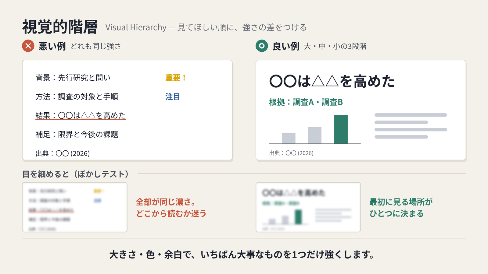

第9回
視覚的階層
Visual Hierarchy

どういう知識か
視覚的階層は、画面や紙面の要素に強弱をつけ、「見てほしい順」に目を導くしくみです。ニールセン・ノーマン・グループのケリー・ゴードンは、色とコントラスト、大きさ（スケール）、グループ化（近さや囲み）の3つで階層を作れると説明しています。
コツは「差をしぼる」ことです。同じ記事は、文字の大きさは大・中・小の3段階までにし、大きく目立たせる要素は多くても2つまで、コントラストの使い分けも3種類までにすることをすすめています。すべてを強調すると、どれも目立たなくなるからです。また、色の違いだけに頼ると、色の見え方が違う人には階層が伝わらないことがあります。
具体例
悪い例：研究発表のスライドで、背景・方法・結果・補足をすべて同じ大きさの文字で並べ、「重要！」「注目」や下線をあちこちに足します。強調どうしが競い合い、聞き手はどこから読めばよいか迷います。
良い例：いちばん伝えたい結論を1文にして、最も大きく太く置きます。次に根拠を中くらいの見出しと1色のアクセントで示し、補足や出典は小さく薄くします。強く見せるのは結論と根拠の2つだけです。
今日から使えるひとこと
できあがったスライドやページから一歩離れて目を細めるか、画像をぼかして見てください（記事では「スクイントテスト」と呼ばれています）。文字が読めなくても、最初に目に入るのがいちばん大事な要素なら合格です。そうでなければ、文字の大きさを3段階にしぼり、強調を2つ以内に減らします。
出典
- Visual Hierarchy in UX: Definition https://www.nngroup.com/articles/visual-hierarchy-ux-definition/ 色とコントラスト・大きさ・グループ化の3要素、大きさは3段階まで、スクイントテスト